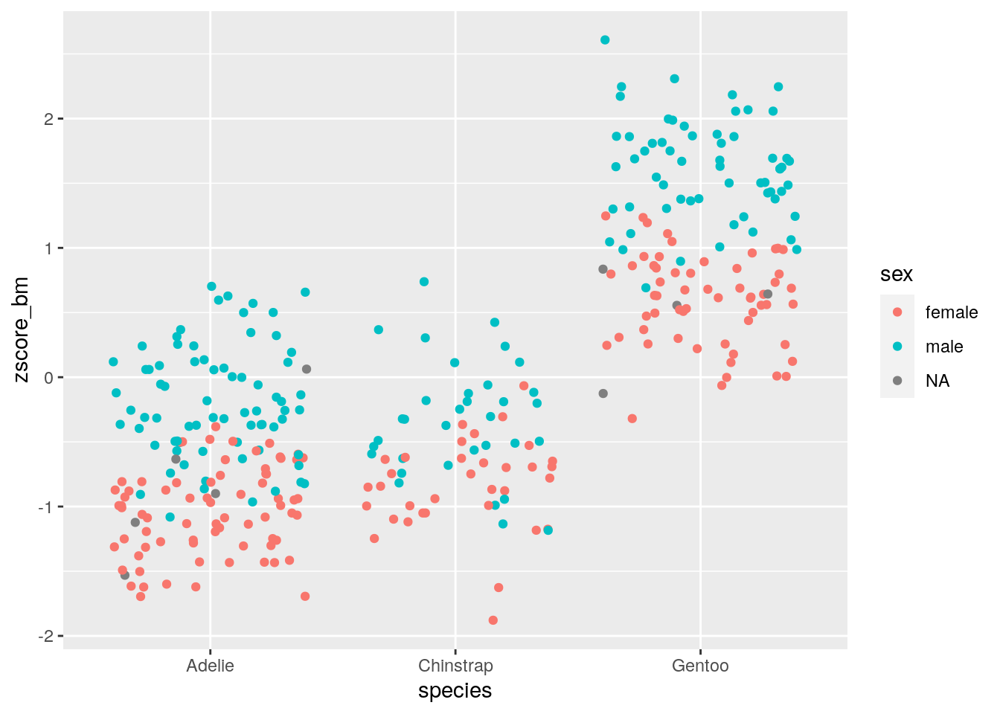

Lecture 4 Data wrangling
4.1 Goal
Learn how to manipulate large data sets by writing efficient, consistent, and compact code. Introduce the use of dplyr, tidyr, and the “pipeline” operator %>%. Effortlessly produce statistics for grouped data. Massage data into “tidy” form.
4.2 What is data wrangling?
As biologists living in the XXI century, we are often faced with tons of data, possibly replicated over several organisms, treatments, or locations. We would like to streamline and automate our analysis as much as possible, writing scripts that are easy to read, fast to run, and easy to debug. Base R can get the job done, but often the code contains complicated operations, and a lot of $ signs and brackets.
We’re going to learn about the packages dplyr and tidyr, which are part of tidyverse and can be used to manipulate large data frames in a simple and straightforward way. These tools are also much faster than the corresponding base R commands, are very compact, and can be concatenated into “pipelines”.
To start, we need to import the libraries:
library(tidyverse) # this loads both dplyr and tidyr, along with other packages
library(palmerpenguins) # a nice data set to play withWe are going to use the data set penguins from the package palmerpenguins, which we have already seen last week.
4.3 A new data type, tibble
This is now a :
## [1] "tbl_df" "tbl" "data.frame"dplyr ships with a new data type, called a tibble. To convert a data.frame into a tibble, use as_tibble:
The nice feature of tbl objects is that they will print only what fits on the screen, and also give you useful information on the size of the data, as well as the type of data in each column. Other than that, a tbl object behaves very much like a data.frame. In some rare cases, you want to transform the tbl back into a data.frame. For this, use the function as.data.frame(tbl_object).
We can take a look at the data using one of several functions:
head(dt)shows the first few rowstail(dt)shows the last few rowsglimpse(dt)a summary of the data (similar tostrin base R)View(dt)open in spreadsheet-like window
4.4 Selecting rows and columns
There are many ways to subset the data, either by row (subsetting the observations), or by column (subsetting the variables). For example, let’s select only the rows with observations from the island Torgersen:
## # A tibble: 52 x 8
## species island bill_length_mm bill_depth_mm flipper_length_… body_mass_g
## <fct> <fct> <dbl> <dbl> <int> <int>
## 1 Adelie Torge… 39.1 18.7 181 3750
## 2 Adelie Torge… 39.5 17.4 186 3800
## 3 Adelie Torge… 40.3 18 195 3250
## 4 Adelie Torge… NA NA NA NA
## 5 Adelie Torge… 36.7 19.3 193 3450
## 6 Adelie Torge… 39.3 20.6 190 3650
## 7 Adelie Torge… 38.9 17.8 181 3625
## 8 Adelie Torge… 39.2 19.6 195 4675
## 9 Adelie Torge… 34.1 18.1 193 3475
## 10 Adelie Torge… 42 20.2 190 4250
## # … with 42 more rows, and 2 more variables: sex <fct>, year <int>We have 52 observations. We have used the command filter(tbl, conditions) to select certain observations. We can combine several conditions, by listing them side by side, possibly using logical operators.
Exercise: what does this do?
filter(penguins, bill_length_mm > 40, bill_depth_mm > 20, sex == male)
We can also select particular variables (columns) using the function select(tbl, cols to select). For example, select species and island:
## # A tibble: 344 x 2
## species island
## <fct> <fct>
## 1 Adelie Torgersen
## 2 Adelie Torgersen
## 3 Adelie Torgersen
## 4 Adelie Torgersen
## 5 Adelie Torgersen
## 6 Adelie Torgersen
## 7 Adelie Torgersen
## 8 Adelie Torgersen
## 9 Adelie Torgersen
## 10 Adelie Torgersen
## # … with 334 more rowsHow many species are represented in the data set? We can use the function distinct(tbl, cols to select) to retain only the rows that differ from each other:
## # A tibble: 3 x 1
## species
## <fct>
## 1 Adelie
## 2 Gentoo
## 3 ChinstrapShowing that there are three species, once we removed the duplicates. There are many other ways to subset observations:
sample_n(tbl, howmany, replace = TRUE)samplehowmanyrows at random (with replacement)sample_frac(tbl, proportion, replace = FALSE)sample a certain proportion (e.g.0.2for 20%) of rows at random without replacementslice(tbl, 5:20)extract the rows5to20top_n(penguins, 10, body_mass_g)extract the first10rows, once ordered bybody_mass_g
More ways to select columns:
select(penguins, contains("mm"))select all columns containing the stringmmselect(penguins, -year, -body_mass_g)exclude the columnsyearandbody_mass_gselect(penguins, matches("length|bill"))select all columns whose names match a regular expression
4.5 Creating pipelines using %>%
We’ve been calling nested functions, such as distinct(select(penguins, species)). If you have to add another layer or two, the code would become unreadable. dplyr allows you to “un-nest” these functions and create a “pipeline” in which you concatenate commands separated by a special operator, %>%. For example:
penguins %>% # take a data table
select(species) %>% # select a column
distinct() # remove duplicates## # A tibble: 3 x 1
## species
## <fct>
## 1 Adelie
## 2 Gentoo
## 3 Chinstrapdoes exactly the same operations as the command above, but is much more readable. By concatenating many commands, you can create incredibly complex pipelines while retaining readability. It is also quite easy to add another piece of the pipeline in between commands, or to comment some of the pipeline out.
Another advantage of pipelines is that they help with name completion. In fact, RStudio is running in the background your pipeline while you type it. Try typing dt %>% filter( and then start typing bill and press Tab: you will see the options to complete the column name; choose it with your arrows and hit Return. The back tickmarks will be added automatically if needed (e.g., column names containing spaces, or starting with a digit).
4.6 Producing summaries
Sometimes we need to calculate statistics on certain columns. For example, calculate the average number of eggs shedded by the infected mice. We can do this using summarise (you can use British or American spelling):
## # A tibble: 1 x 1
## avg
## <dbl>
## 1 4202.# alternatively, drop_na(body_mass_g) removes all the observations for which
# body_mass_g is NA
penguins %>%
drop_na(body_mass_g) %>%
summarise(avg = mean(body_mass_g, na.rm = TRUE))## # A tibble: 1 x 1
## avg
## <dbl>
## 1 4202.where we used na.rm = TRUE to ignore missing values. This command returns a tbl object with just the average egg count. You can combine multiple statistics (use first, last, min, max, n [count the number of rows], n_distinct [count the number of distinct rows], mean, median, var, sd, etc.):
penguins %>%
summarise(avg = mean(body_mass_g, na.rm = TRUE),
sd = sd(body_mass_g, na.rm = TRUE),
median = median(body_mass_g, na.rm = TRUE))## # A tibble: 1 x 3
## avg sd median
## <dbl> <dbl> <dbl>
## 1 4202. 802. 40504.7 Summaries by group
One of the most useful features of dplyr is the ability to produce statistics for the data once subsetted by groups. For example, we would like to compute the average body mass by species and sex:
penguins %>%
drop_na() %>%
group_by(sex, species) %>%
summarise(mean = mean(body_mass_g, na.rm = TRUE))## # A tibble: 6 x 3
## # Groups: sex [2]
## sex species mean
## <fct> <fct> <dbl>
## 1 female Adelie 3369.
## 2 female Chinstrap 3527.
## 3 female Gentoo 4680.
## 4 male Adelie 4043.
## 5 male Chinstrap 3939.
## 6 male Gentoo 5485.showing that male penguins are heavier for the three species considered.
Exercise: find the average
bill_depth_mmandbill_length_mmbyspeciesandsex. Filter the data to consider only observations for the year 2008.
4.8 Ordering the data
To order the data according to one or more variables, use arrange():
## # A tibble: 344 x 8
## species island bill_length_mm bill_depth_mm flipper_length_… body_mass_g
## <fct> <fct> <dbl> <dbl> <int> <int>
## 1 Chinst… Dream 46.9 16.6 192 2700
## 2 Adelie Biscoe 36.5 16.6 181 2850
## 3 Adelie Biscoe 36.4 17.1 184 2850
## 4 Adelie Biscoe 34.5 18.1 187 2900
## 5 Adelie Dream 33.1 16.1 178 2900
## 6 Adelie Torge… 38.6 17 188 2900
## 7 Chinst… Dream 43.2 16.6 187 2900
## 8 Adelie Biscoe 37.9 18.6 193 2925
## 9 Adelie Dream 37.5 18.9 179 2975
## 10 Adelie Dream 37 16.9 185 3000
## # … with 334 more rows, and 2 more variables: sex <fct>, year <int>## # A tibble: 344 x 8
## species island bill_length_mm bill_depth_mm flipper_length_… body_mass_g
## <fct> <fct> <dbl> <dbl> <int> <int>
## 1 Gentoo Biscoe 49.2 15.2 221 6300
## 2 Gentoo Biscoe 59.6 17 230 6050
## 3 Gentoo Biscoe 51.1 16.3 220 6000
## 4 Gentoo Biscoe 48.8 16.2 222 6000
## 5 Gentoo Biscoe 45.2 16.4 223 5950
## 6 Gentoo Biscoe 49.8 15.9 229 5950
## 7 Gentoo Biscoe 48.4 14.6 213 5850
## 8 Gentoo Biscoe 49.3 15.7 217 5850
## 9 Gentoo Biscoe 55.1 16 230 5850
## 10 Gentoo Biscoe 49.5 16.2 229 5800
## # … with 334 more rows, and 2 more variables: sex <fct>, year <int>4.9 Renaming columns
To rename one or more columns, use rename():
## # A tibble: 344 x 8
## species island bill_length_mm bill_depth_mm flipper_length_… bm sex
## <fct> <fct> <dbl> <dbl> <int> <int> <fct>
## 1 Adelie Torge… 39.1 18.7 181 3750 male
## 2 Adelie Torge… 39.5 17.4 186 3800 fema…
## 3 Adelie Torge… 40.3 18 195 3250 fema…
## 4 Adelie Torge… NA NA NA NA <NA>
## 5 Adelie Torge… 36.7 19.3 193 3450 fema…
## 6 Adelie Torge… 39.3 20.6 190 3650 male
## 7 Adelie Torge… 38.9 17.8 181 3625 fema…
## 8 Adelie Torge… 39.2 19.6 195 4675 male
## 9 Adelie Torge… 34.1 18.1 193 3475 <NA>
## 10 Adelie Torge… 42 20.2 190 4250 <NA>
## # … with 334 more rows, and 1 more variable: year <int>4.10 Adding new variables using mutate
If you want to add one or more new columns, with the content being a function of other columns, use the function mutate. For example, we are going to add a new column showing the z-score for the body mass of each individual:
penguins %>%
mutate(zscore_bm = scale(body_mass_g)) %>%
select(species, sex, body_mass_g, zscore_bm)## # A tibble: 344 x 4
## species sex body_mass_g zscore_bm[,1]
## <fct> <fct> <int> <dbl>
## 1 Adelie male 3750 -0.563
## 2 Adelie female 3800 -0.501
## 3 Adelie female 3250 -1.19
## 4 Adelie <NA> NA NA
## 5 Adelie female 3450 -0.937
## 6 Adelie male 3650 -0.688
## 7 Adelie female 3625 -0.719
## 8 Adelie male 4675 0.590
## 9 Adelie <NA> 3475 -0.906
## 10 Adelie <NA> 4250 0.0602
## # … with 334 more rowsWe can pipe the results to ggplot for plotting!
penguins %>%
mutate(zscore_bm = scale(body_mass_g)) %>%
select(species, sex, body_mass_g, zscore_bm) %>%
ggplot() + aes(x = species, y = zscore_bm, colour = sex) +
geom_jitter()## Warning: Removed 2 rows containing missing values (geom_point).
You can use the function transmute() to create a new column and drop the original columns.
Most importantly, you can use mutate and transmute on grouped data. For example, let’s recompute the z-score of the body_mass_g once the data is grouped by species and sex:
penguins %>%
drop_na() %>%
select(species, sex, body_mass_g) %>%
group_by(species, sex) %>%
mutate(zscore_bm = scale(body_mass_g)) %>%
arrange(body_mass_g)## # A tibble: 333 x 4
## # Groups: species, sex [6]
## species sex body_mass_g zscore_bm
## <fct> <fct> <int> <dbl>
## 1 Chinstrap female 2700 -2.90
## 2 Adelie female 2850 -1.93
## 3 Adelie female 2850 -1.93
## 4 Adelie female 2900 -1.74
## 5 Adelie female 2900 -1.74
## 6 Adelie female 2900 -1.74
## 7 Chinstrap female 2900 -2.20
## 8 Adelie female 2925 -1.65
## 9 Adelie female 3000 -1.37
## 10 Adelie female 3000 -1.37
## # … with 323 more rows